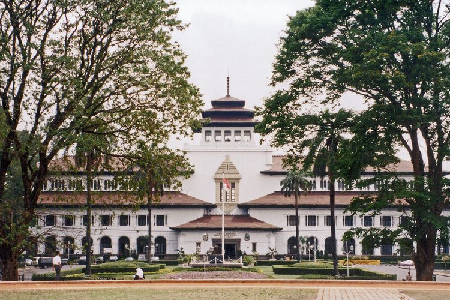

Nama “Gedung Sate” berasal dari ornamen di puncak bangunan yang menyerupai tusuk sate, berupa menara kecil berbentuk tumpeng bertingkat dengan enam bola di ujungnya yang juga berfungsi sebagai penangkal petir.
Meski tidak bisa masuk ke gedung utama, pengunjung dapat menikmati museum dengan area interaktif, termasuk pengalaman virtual berkeliling Gedung Sate. Sumber: pp
